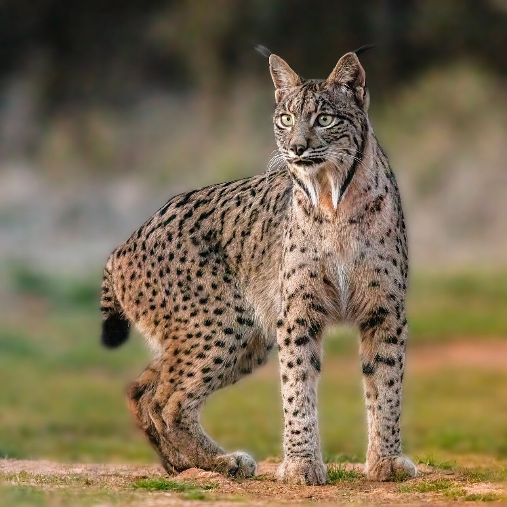
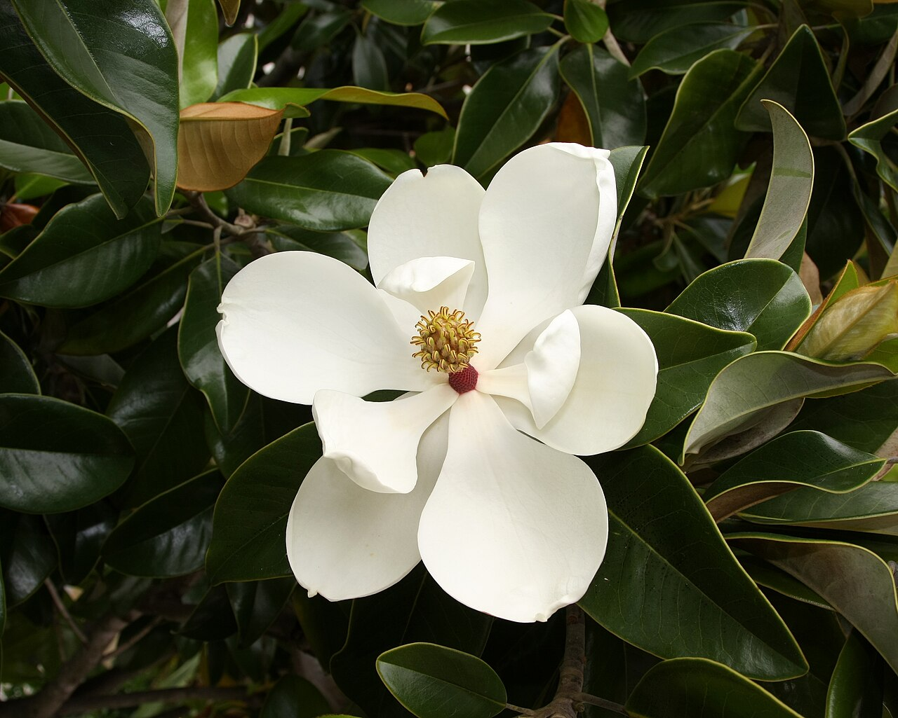

Lula.
diario de la mañana — el mundo, tu ciudad y lo que te asombra
Buen día, y hoy aprovechá: de 14° a 26°, sol casi todo el día y nada de lluvia. Mañana se pudre otra vez. La ciencia de hoy es ecología de campo de la buena: treinta años de datos en Doñana para mostrar algo que nunca se había visto, un lince cazando aves rapaces. Y en cine, Rashomon, que es la mejor clase de epistemología que se puede dar en 88 minutos.
- El mundo en cinco minutos3'
- Argentina y Buenos Aires2'
- Ciencia: el lince que empezó a cazar milanos7'
- Mirá a tu alrededor2'
- Receta de estación2'
- La palabra del día1'
- Le français du matin2'
- English corner3'
- Jueves de cine: Rashomon4'
- Hoy en la historia · un lugar2'
- Lo que me asombra hoy1'
- Pasatiempo: sudoku medio12'
- Cuaderno: repaso, quiz y escritura4'
Europa del este se junta, Francia para y China abre su feria de importaciones
Día de agenda cargada y sin un titular único. Los jefes de Estado del Grupo de Visegrado —Polonia, Hungría, Chequia y Eslovaquia— se reúnen hoy en Trencin con la presidenta de la Comisión Europea, Ursula von der Leyen: el bloque que más tensiona a Bruselas sentado con Bruselas. En Francia, los grandes sindicatos convocan otra jornada de huelgas y movilizaciones. Y en Shanghái abre la novena Exposición Internacional de Importaciones, la feria con la que China muestra que también compra.
Lo que nos toca de cerca: una organización estadounidense que sigue casos de abuso en la Iglesia publicó hoy los nombres de más de setenta clérigos acusados de abuso sexual infantil, a días de que empiece la primera gira latinoamericana del papa León XIV —Uruguay, Argentina y Perú, desde mañana—. Va a ser, quiera o no, uno de los temas de la visita.
Y además: en Hong Kong, el activista Joshua Wong escucha hoy su sentencia tras declararse culpable de conspiración; en la Estación Espacial hay caminata espacial de unas siete horas, con el astronauta de la NASA Anil Menon y el canadiense Joshua Kutryk; y en Abu Dabi termina ADIPEC, la cumbre de energía más grande del mundo.
El riesgo país siguió subiendo y quedó cerca de 850
Tercera jornada de deterioro: el índice de J.P. Morgan sumó otras 19 unidades y quedó en la zona de 850 puntos —algunas mediciones intradiarias marcaron 852—, el nivel más alto en doce meses. El dólar, en cambio, se mantuvo: el minorista del Banco Nación cerró a $1.570 y el mayorista alrededor de $1.551. Las acciones argentinas cayeron incluso con Wall Street en alza, que es la señal de que el problema se está leyendo como local.
Por qué subió justo ahora: por el resultado estadounidense. Con el Congreso en manos demócratas, el mercado descuenta menos margen para que el Tesoro de Estados Unidos sostenga acuerdos financieros con la Argentina sin pasar por el Capitolio. Es un caso raro y muy claro de riesgo político importado: no cambió nada acá, cambió quién firma allá.
Para hacer en la ciudad
- Desde mañana, la visita papal: la gira de León XIV por Uruguay, Argentina y Perú va del 6 al 17. Mirá los cortes antes de moverte por el centro.
- Jueves de cine: la Sala Lugones y el Malba suelen tener ciclos de clásicos restaurados a precio bajo; es el mejor lugar para ver en pantalla grande algo como lo de hoy.
Cuando se acabaron los conejos, el lince empezó a cazar milanos
De qué estamos hablando: una red trófica no es una lista de quién come a quién: es un conjunto de relaciones que pueden reorganizarse cuando algo falla. Este trabajo de Nature documenta esa reorganización en vivo, en el Parque Nacional de Doñana, con una serie de campo de tres décadas. Es ecología del tipo que casi no se puede hacer ya, porque exige que alguien anote lo mismo todos los años durante treinta.

Quién es quién
- Lince ibérico (Lynx pardinus): un depredador hiperespecializado. El conejo europeo representa normalmente el 80-90 % de su dieta, y esa dependencia es exactamente lo que casi lo extingue.
- Milano negro (Milvus migrans): un ave rapaz mediana, migratoria, que anida en colonias laxas en los árboles de Doñana. No es presa de nadie en ese sistema: es, también, un depredador tope.
- Enfermedad hemorrágica del conejo (EHC): un calicivirus que llegó a la península en 1988 y derrumbó las poblaciones de conejo. Es el disparador de toda esta historia.
- Depredación intragremial: el término para cuando un depredador se come a otro depredador del mismo nivel trófico, con el que normalmente solo compite. No es un caso raro en teoría; sí es raro verlo aparecer donde antes no estaba.
Qué encontraron
- Dos golpes encadenados. Primero la enfermedad bajó los conejos. Después vinieron los años de sequía, que redujeron las presas alternativas. Recién con esa combinación apareció el comportamiento nuevo: linces entrando a las colonias y matando pichones de milano.
- Solo en años secos. El dato más fuerte del trabajo es ese: los ataques no aparecen después de la epidemia, sino específicamente en los años de sequía posteriores. Es una interacción condicional al clima, no un cambio permanente de dieta.
- Las cifras del sistema: entre cuatro y seis linces adultos en la zona, frente a 105 a 223 parejas reproductoras de milano. Pocos individuos, efecto grande.
- Qué les pasó a los milanos: cayó su éxito reproductivo a lo largo de la vida, y hubo abandono de territorios y dispersión hacia otros lugares. Los autores rastrean además posibles efectos en cascada hacia abajo, por ejemplo sobre el mochuelo.
Lectura crítica
- «Carrera armamentista» es una metáfora, y los autores lo saben. No hay cambio evolutivo documentado ni defensas nuevas en los milanos: hay un comportamiento que aparece y una respuesta demográfica. Cuando leas ese término en una nota de prensa, fijate si hay evolución o solo ecología.
- Es un sitio, un período. Doñana es un sistema extraordinariamente bien estudiado y también muy particular: pocas presas alternativas, mucha presión hídrica, poblaciones chicas. Generalizar a otros sistemas es tentador y arriesgado.
- Correlación y causalidad en campo. No se puede aleatorizar una sequía. Lo que sostiene el argumento es la secuencia temporal y que el fenómeno aparece y desaparece con los años secos, no un experimento.
- Yo no vi las figuras: trabajé con el resumen y la cobertura.
La conexión con lo que estudiás
Dos cosas. Una: esto es biodiversidad aplicada, el tema que se discutió la semana pasada en la COP17 de Ereván, y muestra por qué los indicadores simples engañan. En Doñana el lince está mejor que hace veinte años —la conservación funcionó— y aun así su recuperación, combinada con la sequía, perjudica a otra especie protegida. Conservar no es maximizar una cifra. Y dos, para tu carrera: este trabajo existe porque alguien sostuvo un monitoreo largo. Los datasets de treinta años son la infraestructura menos glamorosa y más valiosa de la ecología, y hoy la bioinformática que se hace con ellos es tan importante como el trabajo de campo que los generó.
«Drought and disease trigger novel interactions among top predators». Sergio y col., Nature 659(8139), 5 de noviembre de 2026, doi:10.1038/s41586-026-11194-z
Biotec en el mundo real · El INIBIOMA, en Bariloche
Si lo de hoy te gustó, el equivalente argentino de ese tipo de ciencia está en el INIBIOMA (Instituto de Investigaciones en Biodiversidad y Medioambiente, CONICET-Universidad Nacional del Comahue).
- Qué se hace: ecología de poblaciones y comunidades, limnología de los lagos andinos, invasiones biológicas —el ciervo colorado, el visón americano, el salmónido introducido—, ecología del fuego y genética de poblaciones.
- Dónde entra la biología molecular: en el ADN ambiental. Se filtra agua de un lago, se extrae el ADN que dejaron los organismos y se secuencia un marcador —COI para animales, rbcL o ITS para plantas y hongos— para reconstruir qué especies hay sin ver ni capturar a ninguna. Es censo por rastro químico, y cambió la escala a la que se puede monitorear.
- Por qué importa: los compromisos del marco de Kunming-Montreal exigen medir, y medir biodiversidad en serio es caro. El metabarcoding de ADN ambiental es hoy la mejor relación entre costo y resolución que existe.
- Salida laboral: ecología cuantitativa, bioinformática de metabarcoding, gestión de áreas protegidas, consultoría ambiental y evaluación de impacto.
Ciencia en la vida cotidiana · Por qué un gato doméstico caza aunque esté lleno
Porque el hambre y la caza están, en los felinos, en circuitos distintos. La secuencia de acecho, persecución y captura se dispara con estímulos de movimiento —el patrón de una presa que se escapa— y es gratificante por sí misma, independientemente del estado nutricional; matar y comer son dos programas separados que normalmente van juntos. Por eso un gato bien alimentado sigue cazando, y por eso el juguete con plumas funciona aunque el plato esté lleno.
El dato que sirve: tiene una consecuencia ecológica enorme. Un depredador que caza sin hambre no se autolimita por saciedad, y por eso los gatos domésticos sueltos son uno de los mayores impactos sobre aves y pequeños mamíferos en todo el mundo. Si tenés gato, el collar con cascabel y mantenerlo adentro al amanecer y al atardecer reducen bastante el daño.
La magnolia, que es más vieja que las abejas, y el gavilán mixto


.jpg){kind=link}
El árbol: magnolia
| Nombre científico | Magnolia grandiflora (Magnoliáceas). Del sudeste de Estados Unidos; en Buenos Aires está en plazas, jardines y algunas veredas anchas. |
|---|---|
| Cómo reconocerla | Hoja gruesa, rígida, verde oscura y brillante arriba, con el envés cubierto de una pelusa color óxido. Flor enorme, blanca, de perfume cítrico, que abre de noviembre a enero y dura dos días. |
| Lo asombroso | Las magnolias aparecieron antes que las abejas. Sus flores están polinizadas por escarabajos, y eso explica todo su diseño: las piezas florales son gruesas y coriáceas para resistir que un escarabajo las muerda y camine encima, no hay nectarios verdaderos —el premio es el polen— y los carpelos están dispuestos en espiral sobre un eje, una estructura arcaica anterior al pistilo soldado de las flores modernas. Estás mirando un diseño de hace cien millones de años. |
El ave: gavilán mixto
| Nombre científico | Parabuteo unicinctus (Accipítridos). En la ciudad se lo ve en los parques grandes, en la Reserva y sobre las autopistas. |
|---|---|
| Cómo reconocerlo | Pardo oscuro con los hombros y los muslos castaño rojizos, y una banda blanca muy marcada en la base y la punta de la cola. Posado parece de dos colores; en vuelo, las «charreteras» rojizas lo delatan. |
| Lo asombroso | Es de las poquísimas rapaces del mundo que cazan en grupo y de forma coordinada: dos o tres aves rodean la presa, una la levanta y otra la intercepta, y después comparten. Ese comportamiento, documentado sobre todo en poblaciones del desierto, es tan confiable que lo volvió el ave preferida de la cetrería moderna. Cooperación en un grupo que, en general, no coopera con nadie. |
Gelatina de frutas de verdad
Diez minutos y cuatro horas de heladera. Y una advertencia sobre el ananá.
Ingredientes
- 7 g de gelatina sin sabor (1 sobre) por cada 500 ml de líquido
- 500 ml de jugo de naranja o de pomelo colado
- 2 cucharadas de azúcar (opcional)
- Frutillas, duraznos o arándanos en trozos
Pasos
- Hidratá la gelatina en 50 ml de jugo frío, 5 minutos, hasta que se hinche.
- Calentá otros 150 ml sin que hierva y disolvé ahí la gelatina hidratada.
- Mezclá con el resto del jugo frío y el azúcar.
- Agregá la fruta, repartida, y a la heladera 4 horas como mínimo.
La química de la receta
Qué es un gel de gelatina: la gelatina es colágeno hidrolizado. En frío, esas cadenas vuelven a enrollarse parcialmente en triples hélices y forman uniones entre sí: una red tridimensional que atrapa el agua. No la absorbe como una esponja: la inmoviliza por capilaridad en una malla. Por eso el gel se derrite a unos 35 °C —debajo de la temperatura corporal, de ahí la sensación de que se deshace en la boca— y por eso vuelve a cuajar si lo enfriás: es un gel termorreversible, cosa que los geles de pectina o de huevo no son.
Por qué hay que hidratar primero: si tirás el polvo en líquido caliente, la superficie de cada partícula gelifica al instante y encapsula el interior seco: quedan grumos que ya no se disuelven. Y nunca hervir: arriba de 80-85 °C las cadenas se degradan y el gel pierde fuerza.
Y la advertencia: con ananá, kiwi, papaya, mango o higo frescos, la gelatina no cuaja nunca. Esas frutas tienen proteasas —bromelina en el ananá, actinidina en el kiwi, papaína en la papaya— que cortan las cadenas de colágeno y destruyen la red mientras se está formando. La solución es simple y es química: hervir la fruta dos minutos. La enzima es una proteína y se desnaturaliza con el calor; el ananá en lata, que viene pasteurizado, funciona perfecto.
evidencia sustantivo
latín videre (ver) → e-videns (que se ve desde afuera, manifiesto) → evidentia (cualidad de lo obvio) → castellano evidencia · francés évidence · inglés evidence
En latín y en el castellano clásico, evidencia significaba exactamente «lo que salta a la vista»: aquello tan claro que no necesita prueba. Es el sentido que sobrevive en francés: une évidence es una obviedad, y bien sûr, c'est une évidence quiere decir «por supuesto, es obvio». Es decir: lo contrario de algo que haya que demostrar.
El sentido que usamos nosotros —evidencia como prueba, los datos que sostienen una afirmación— es un calco del inglés evidence, que se impuso con la ciencia y el derecho anglosajones y entró al castellano en el siglo XX. Y es una inversión perfecta del original: donde antes la palabra nombraba lo que no hace falta probar, ahora nombra justamente el material con el que se prueba. «Medicina basada en la evidencia» significa, literalmente, «medicina basada en lo obvio», y quiere decir lo contrario: medicina basada en que nada es obvio.
J'ai mal à la tête
— Ça ne va pas ?
— Non, j'ai mal à la tête depuis ce matin.
— Tu as de la fièvre ?
— Un peu. Je vais à la pharmacie.
| j'ai mal à… | me duele… [she mal A] |
|---|---|
| la tête / le ventre | la cabeza / la panza [la TET / le VANTR] |
| avoir de la fièvre | tener fiebre [a-vuar de la FIEVR] |
| depuis ce matin | desde esta mañana [de-PÜI se ma-TAN] |
Un truco
Dos cosas que no se traducen palabra por palabra. Primero, el dolor se tiene y va con à: j'ai mal à la tête, j'ai mal au ventre (à + le = au), j'ai mal aux dents (à + les = aux). Segundo, depuis con presente: donde nosotros decimos «me duele desde esta mañana» o «hace dos días que me duele», el francés usa siempre presente + depuis, nunca un pasado. J'habite ici depuis trois ans: vivo acá desde hace tres años.
The witness who is certain
Confidence and accuracy, in eyewitness testimony, come apart in ways that make juries uncomfortable. A witness who hesitates is discounted; a witness who is sure is believed. Yet certainty is itself something that builds over time — through retelling, through the investigator's encouraging nod, through the simple fact of having said the same sentence out loud twenty times. The version delivered in court is not the memory formed at the scene. It is the memory as last rehearsed.
What makes this hard to accept is that the witness is not lying, and knows they are not lying. There is no inner signal that distinguishes a recollection from a reconstruction, which is precisely why the feeling of remembering is such poor evidence that anything is being remembered at all. The error, when it occurs, is invisible from the inside.
None of this means testimony is worthless. It means it behaves like any other measurement: more reliable when taken early, once, and without contamination, and less reliable every time it is handled afterwards.
- to come apart — separarse, dejar de ir juntas
- to discount — descartar, no tomar en cuenta
- a nod — un asentimiento con la cabeza
- to rehearse — ensayar
- a recollection — un recuerdo
- from the inside — desde adentro
- contamination — contaminación (de la muestra o del recuerdo)
- to handle — manipular, manosear
Rashomon (1950): cuatro versiones y ninguna comprobable
Bajo la lluvia, en la puerta derruida de Rashomon, tres hombres se refugian y repasan un juicio. Un samurái apareció muerto en el bosque; su esposa fue violada; un bandido confesó. Hasta ahí, los hechos. Después Akira Kurosawa cuenta la misma escena cuatro veces —la del bandido, la de la mujer, la del muerto a través de una médium y la de un leñador que miraba— y las cuatro son coherentes, están bien contadas y son incompatibles entre sí. La película no resuelve cuál es la verdadera. Ese es el punto.
Qué mirar
- La cámara entre los árboles. Kurosawa filmó directo contra el sol, cosa que en 1950 no se hacía, usando espejos para rebotar luz. El bosque queda como un parpadeo de sombra y luz sobre las caras: literalmente no se termina de ver.
- Nadie miente para zafar. El detalle genial del guion: cada versión deja mal parado a quien la cuenta de un modo distinto, pero lo deja digno. El bandido se pinta temible, la mujer trágica, el samurái honorable. Cada uno miente para parecerse a lo que necesita ser.
- El leñador, que parece el testigo neutral, también tiene algo que esconder. Cuando se cae esa última versión, se cae la idea misma de que exista un relato desinteresado.
- La lluvia. Kurosawa le hizo agregar tinta negra al agua para que se viera contra el cielo claro. Suena todo el tiempo y es lo único que no cambia entre versión y versión.
Por qué importa afuera del cine
Ganó el León de Oro en Venecia en 1951 y con eso abrió el cine japonés al resto del mundo; dos años después se llevó un Oscar honorífico. Pero su rastro más grande está fuera de la pantalla: en psicología y en derecho se habla del «efecto Rashomon» para nombrar el fenómeno de testigos honestos que recuerdan de manera incompatible el mismo hecho. Es uno de los poquísimos casos en que una película le dio nombre a un concepto técnico que después se usó en serio, en papers y en fallos.
No es una película sobre mentirosos. Es una película sobre lo que le pasa a un hecho cuando tiene que pasar por una persona para llegar a otra.
5 de noviembre de 1605: descubren la Conspiración de la Pólvora
En la madrugada de hoy hace 421 años, los guardias encontraron a Guy Fawkes en un sótano alquilado debajo de la Cámara de los Lores, custodiando 36 barriles de pólvora. El plan de un grupo de católicos ingleses era volar el Parlamento con el rey Jacobo I adentro, en la apertura de sesiones, y poner en el trono a su hija. Una carta anónima, que alertaba a un lord para que no fuera ese día, hizo que revisaran los sótanos.
Inglaterra lo festeja desde entonces con fogatas: Bonfire Night es hoy a la noche, y se queman muñecos de Fawkes. Es, probablemente, la única fiesta nacional del mundo que celebra que algo no pasó.
El lugar: Westminster
| Dónde | Sobre la orilla norte del Támesis. El edificio que se ve hoy no es el de 1605: ese se incendió en 1834, y el actual —con el reloj que todos llaman Big Ben, que en realidad es el nombre de la campana— es neogótico victoriano. |
|---|---|
| Qué quedó de aquello | Antes de cada apertura de sesiones, los Yeomen of the Guard todavía revisan ceremonialmente los sótanos con faroles. Es puro teatro y lo hacen igual, todos los años, desde hace cuatro siglos. |
| Y la máscara | La cara estilizada de Guy Fawkes, dibujada para el cómic V de Vendetta, terminó siendo el emblema de protestas en medio mundo. Un conspirador católico del siglo XVII convertido en símbolo global del anonimato: el camino más raro que puede hacer una cara. |
Cada vez que recordás algo, lo volvés a escribir
La idea vieja era que un recuerdo se «consolida» una vez —pasa de lábil a estable en las horas siguientes al hecho— y después queda guardado, como un archivo. Lo que se descubrió a principios de los 2000 es que no: al evocarlo, el recuerdo vuelve a volverse lábil y tiene que reconsolidarse para quedar guardado otra vez. Y durante esa ventana de horas se puede modificar, debilitar o directamente borrar interfiriendo con la síntesis de proteínas.
Lo lindo para vos es que buena parte de esa historia se escribió acá. El laboratorio de Héctor Maldonado en Exactas (UBA) venía estudiando memoria en el cangrejo Neohelice desde hacía décadas, y el trabajo de Arturo Romano y María Eugenia Pedreira mostró en ese modelo que la reconsolidación existía y cuáles eran sus condiciones de disparo: no alcanza con recordar, tiene que haber algo nuevo en la evocación, una discrepancia con lo esperado, para que la memoria se reabra. Después el grupo lo llevó a humanos.
Pensá lo que implica. El recuerdo que tenés de algo de hace diez años no es el original: es la última versión que guardaste, reescrita cada vez que lo contaste, con el estado de ánimo de ese día encima. Rashomon no es una metáfora. Es una descripción bastante literal de cómo funciona el sistema.
El del jueves
Repaso y quiz de la mañana
Repaso de idiomas
Quiz
¿Qué desencadenó que el lince empezara a cazar milanos?
«Depredación intragremial» significa…
¿Por qué la gelatina no cuaja con ananá fresco?
Las flores de la magnolia están diseñadas para…
«Evidencia» significaba originalmente…
En Rashomon, cada personaje cuenta una versión distinta porque…
La reconsolidación de la memoria quiere decir que…
Escritura
- Quiz: enfermedad del conejo + sequía · un depredador come a otro de su nivel · la bromelina · escarabajos · lo obvio · cada uno necesita salir digno · el recuerdo se vuelve lábil al evocarlo.
- Repaso: je paie par carte · j'ai mal à la tête · depuis ce matin · separarse, dejar de ir juntas · ensayar · descartar, no tomar en cuenta.
- Francés: por ejemplo, «J'ai mal au ventre depuis hier et j'ai un peu de fièvre.»
Sudoku:
Fuentes de esta edición
- Mundo: Agenda de EFE del 5 de noviembre
- Mercados: Los Andes: dólar y riesgo país tras la elección estadounidense · Todo Jujuy: máximo en un año
- Clima: Minuto Uno, con datos del SMN
- Ciencia: Nature: sequía, enfermedad y nuevas interacciones entre depredadores tope · INIBIOMA (CONICET-UNCo)
- Cine e historia: Britannica: Rashomon · Parlamento británico: la Conspiración de la Pólvora
Mañana, viernes: música. — Lula.